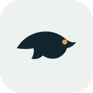

Water temperature, fronts, light and wind, scored for South African bass waters.
Pick a dam or drop a pin to see today’s best fishing window.
Start here. Tap Select spot to pick a dam or one of your saved spots. You can also drop your own pin on the Map tab.
Tip. Tap the spot name to switch dams or saved spots. You can drop your own pin on the Map tab and keep notes on it.
Choose a spot
Waiting for the forecast
Your fishing outlook appears here once the forecast loads.
The 24 and 48 hour pressure history and the hour-by-hour light, wind and rain picture are under Pressure and weather trends below.
Select an hour to see its conditions.
Taller bars are better hours. Outlined bars are your best window, and faded bars are before sunrise or after sunset. Tap a bar for details.
Advice adjusts to the dam's region, the season, water temperature, light, wind, fronts and the water clarity you choose.
Not set yet, so slightly stained is assumed. Pick what you see at the dam.
Advice appears once the forecast loads.
General guidance from common angling experience, not a guarantee. Water temperature, clarity, level, forage and the dam's own structure can change what works, so trust what you see on the day.
More detail
For anglers who want the figures behind the outlook.
Pressure on its own has weak evidence. What matters is the front it signals: bass often feed as pressure falls ahead of a front and slow down for a day or two after it. The score already uses this trend through “Fronts and stability”, so it is not counted twice.
The gauge updates with the forecast.
The 24 and 48 hour trend appears once the forecast loads.
Context appears once the forecast loads.
Many anglers treat new and full moons as stronger feeding windows, especially at first and last light. Use it as a tie-breaker, not a rule.
Averaged over your best window. Water temperature and fronts set how hard bass feed; light, wind and rain decide which hours are best.
Scores run from 0 to 100. The pin marks the day score, the average of the day’s best 4 daylight hours.
The guide fills in once the forecast loads.
Tap a dam to select it, or tap anywhere to drop your own pin and save it.
Tip. Tap anywhere on the map to drop a pin, then name it and save it as your own spot. Tap a dam pin to select that dam instead.
Saved on this device. They also appear in the spot menu at the top of the page.
Record each session to compare forecasts with real results. Logs stay in this browser on this device.
Saved on this device and applied straight away.
Opens straight to this spot’s forecast when you start the app.
Knots suit boaters. Used on the forecast and the share card.
Tailors the “Where to fish” advice.
After 10 sessions logged with a score, the forecast slowly tunes itself to what has actually caught you fish.
Follow phone matches your phone’s light or dark setting.
The layer the Map tab opens on.
Turns off motion effects. Calmer and easier on the battery.
Short hints the first time you use each part of the app.
Show the hints again from the start.
Your spots, notes, sessions and settings live only in this browser. Download a backup now and then, and restore it if you clear your browser data or switch devices. No backup downloaded yet
Restoring adds anything missing and keeps what you already have, so it is safe to run on top of existing data.
Removes saved spots, notes, sessions and settings from this device. Download a backup first if you might want them back.
BassCast SA turns the weather forecast into a fishing score for South African bass dams, so you can see which days and hours are worth planning around. Tap a topic to read more.
Every hour gets a score from five factors. Two of them set how hard bass feed:
The other three decide which hours are best:
Small adjustments are added for the season and spawn stage (worked out from the water temperature and month), the moon and solunar times, and heat stress on hot, still, bright days.
Once you have 10 sessions logged with a score, the app starts to tune itself to your fishing. Factors that rise and fall with your catch rate count a little more, and those that do not count a little less.
Treat the score as a guide to stack the odds, not a promise of fish.
BassCast SA
A personal, non-commercial prototype. Scores are experimental and not a promise of fish, so check local weather and water safety before you go.
Weather from Open-Meteo. A personal, non-commercial prototype: scores are experimental and not a promise of fish. Check local weather and water safety before you go.

Install the app for quick access to fishing conditions, bait recommendations and supported offline features.